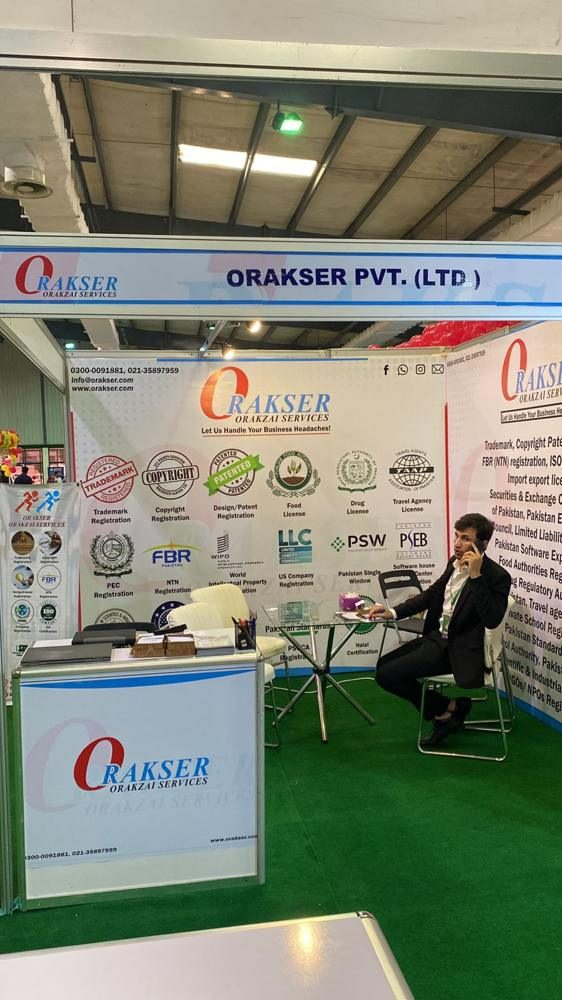

Exhibition Stall Fabricators in Karachi: Built in Our Own Nazimabad Workshop
If you are looking for a Karachi stall fabricator, the question that matters is who actually holds the saw. Here, the stall is cut, built, finished and checked in our own workshop, then installed by our own crew.
What a Karachi stall fabricator actually builds
Fabrication is the stage where a drawing becomes a stall you can walk into. In our Nazimabad workshop we make:
- The stall structure: the frame, walls and panels that define your space
- The fascia: the name sign above the stall, often lit
- Counters, reception desks, shelving and feature walls
- Promotional stalls and customized kiosks for malls and activations
- Ticket counters and booth gates for events
Already have drawings from another designer? Send them with the exhibitor manual and we fabricate to them. If you need the design too, start with exhibition stall design.
How a stall is fabricated, step by step
- Frame: a timber or aluminium structure sized to the drawing.
- Panels: boards and sheets cut and fitted to the frame.
- Finish: paint, laminates or surface treatments, with every face and edge sealed.
- Graphics and fittings: printed panels, lettering, lighting and electrics.
- Test assembly (where the project calls for it): the stall is built once in the workshop and checked.
- Label and pack: parts are numbered so on-site assembly follows the order they were tested.
The materials behind each step are compared in our exhibition stall materials guide.
Why CNC cutting matters in stall fabrication
Our workshops have CNC machines, so the boards and panels for your stall are cut in-house instead of bought in as finished parts. That suits curved portals, slatted walls, lettering and panel cut-outs, and it keeps every part matching the drawing. When a dimension changes, we change the file and cut again.
Fabrication for Karachi's humid coastal air
Wood-based panels can swell at unsealed edges, adhesives and vinyl can lift as moisture creeps under them, and bare steel fasteners corrode. In Karachi we seal every panel face and edge, use corrosion-resistant fixings, laminate graphics against moisture and schedule extra drying time before the hall opens. These choices are made at fabrication stage, which is why the fabricator matters as much as the designer. For the design side, see our Karachi stall designer page.
Stall fabrication price in Karachi
These are starting prices for each stall type, installed. They cover design, fabrication, graphics printing, installation, execution and dismantling, including power, furniture, LED screens and transport to other cities. Your final quote depends on size, design, materials and extras. Payment is 60% upfront and 40% once the stall is installed and set up.
| Stall type | Starting price (installed) |
|---|---|
| Kiosk booth | From PKR 15,000 |
| 10x10 basic package | From PKR 13,000 |
| 10x20 booth | From PKR 25,000 |
| 20x20 booth | From PKR 50,000 |
| Shell scheme stall | From PKR 15,000 |
| Octanorm stall | From PKR 18,000 |
| Island booth | From PKR 50,000 |
| Double-deck booth | From PKR 100,000 |
Full detail is on our exhibition stall cost in Pakistan page.
What to send us and when
- The exhibitor manual from the organiser, so we design to the stall size, height and power rules.
- Your stall number and size, the show name and dates.
- Your logo and brief, if you have them.
We reply with a tailored quote within 24 hours. Design sign-off is needed at least one week before the event, and larger or custom stalls benefit from far more time, especially for sealing and drying. Installation is typically about three days with a crew of 5 to 10 people, and we confirm the timeline in writing.
From our Karachi builds



For a planning example, see how we worked out an 18 x 6 m island for Textile Asia 2026 in Hall 3 at Karachi Expo Centre in our island stall case study. It is a concept for approval, and loads, electrics and fire rules are checked before any build.
Five questions to ask any Karachi stall fabricator
- Who cuts and builds the parts? Ours are cut on our own CNC machines and built in our own workshop.
- Is the stall test-assembled before it ships? We do this where the project calls for it.
- How are panels sealed against humidity? Look for sealed faces and edges and corrosion-resistant fixings.
- What does the price include? Ours covers design, fabrication, printing, installation, execution and dismantling.
- Who installs and dismantles? Our own crew does both.
More on comparing builders: how to choose an exhibition stall contractor in Karachi and in-house vs outsourced booth fabrication.
Our Karachi workshop
Office 202, 2nd Floor, Sadia Press Centre, near Enquiry Office, Block 2, Nazimabad, Karachi 74600. Fabrication happens at this workshop. Call or WhatsApp +92 323 2899503. Our workshop is for fabrication, so we meet online or at a mutually agreed public place.
Related
Common questions
Do you fabricate your own stalls in Karachi?
Yes. Our head workshop in Nazimabad, Karachi cuts and builds the stalls, and our own crew installs them, including inside Expo Centre Karachi.
What is the difference between a stall fabricator and a stall designer?
A stall designer plans the layout, branding and 3D render. A stall fabricator builds the physical stall with carpentry, metalwork, lighting and finishing. We do both in-house, so what is drawn is what gets made.
How much does stall fabrication cost in Karachi?
Starting prices are PKR 13,000 for a basic 10x10 package and PKR 25,000 for a 10x20 booth, installed. Custom builds are quoted to the design.
Can you fabricate to my own drawings?
Yes. Send your drawings with the organiser's exhibitor manual and we fabricate to them.
Do you fabricate for shows outside Karachi?
Yes. We also have workshops in Lahore and Islamabad, and we deliver to other cities with transport included in our starting prices.
How long does fabrication take?
We need design sign-off at least one week before your event. Larger or custom stalls need more time, and we confirm the timeline in writing when you request a quote.
Can I visit the workshop?
Our workshop is a working fabrication space, not a public showroom. We meet online or at a mutually agreed public place.